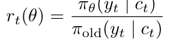
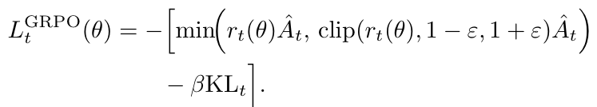
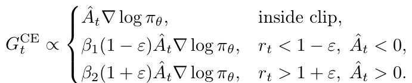
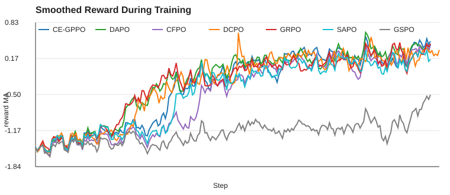
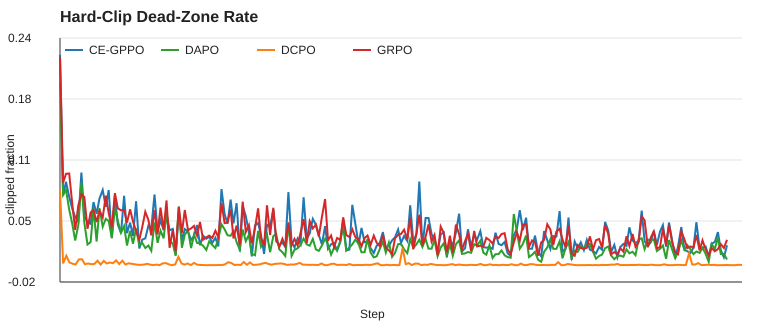

1. Introduction
Reinforcement learning from AI feedback (RLAIF) is widely used to refine language models after supervised fine-tuning. In this setting, a policy generates responses, a reward model or rule-based reward assigns scores, and a policy-gradient objective increases the probability of better responses while suppressing worse ones. The main difficulty is that language-model policies are high-dimensional distributions: even small token-level probability changes can accumulate into unstable behavior. Therefore most practical methods constrain the policy update through a trust-region device such as KL regularization, importance-ratio clipping, or both.
This project asks a focused question: how do different clipping methods change the training process and final behavior of an LLM policy? Instead of treating reward as the only outcome, I analyze the intermediate mechanics that connect an objective to training behavior. The chain is:
The study is built on the MiniMind post-training codebase, using a Qwen-style decoder-only model, Chinese instruction-following RLAIF data, online rollouts, and a shared reward model. I compared GRPO, DAPO, DCPO, CFPO, SAPO, GSPO, and CE-GPPO using the same infrastructure and hyperparameter scale whenever possible. This makes the comparison primarily about the objective, not about differences in data loading, reward shaping, masking, or logging.
2. Related Work
The first category is proximal policy-gradient optimization. PPO introduced the clipped surrogate objective as a simpler alternative to trust-region policy optimization, allowing multiple minibatch updates while limiting policy movement through the ratio between new and old policies [1]. GRPO adapts this idea to LLM reasoning by replacing the critic with group-relative advantages computed over multiple completions for the same prompt [2]. This makes RL training cheaper than actor-critic PPO, but it still inherits token-level clipping behavior.
The second category is variants that modify the clipping geometry. DAPO decouples lower and upper clip bounds and uses dynamic sampling in its large-scale formulation [3]. DCPO uses token-probability-adaptive clipping bounds, widening the permissible ratio interval for low-probability tokens [4]. GSPO moves clipping to a sequence-level normalized ratio, motivated by the high variance of token-level importance weights [5]. These methods share the goal of improving stability, but they intervene at different levels of granularity.
The third category is gradient-preserving or soft trust regions. SAPO replaces hard clipping with a temperature-controlled soft gate that continuously attenuates off-policy updates [6]. CE-GPPO argues that clipped tokens can carry important entropy-regulating gradients and reintroduces selected out-of-clip gradients in a bounded form [7]. CFPO, as implemented in this project, removes hard clipping and uses a quadratic penalty around ratio 1. These approaches are directly connected to this project's main hypothesis: clipping affects training not only by limiting ratios, but by deciding which gradients survive.
3. Methods
3.1 Shared RLAIF Pipeline
The experimental framework uses the same pipeline for all methods. For each prompt, the rollout engine samples multiple completions from a frozen snapshot of the current policy. The trainable policy then recomputes token log-probabilities, and a reference model provides KL terms. Rewards combine a reward model score with simple rule components for response length, thinking-format structure, and repetition penalty. Advantages are group-normalized within each prompt's completions, except for DCPO, which uses its smooth advantage-standardization state.
This shared implementation matters because the measured differences should come
from the surrogate objective. The project logs the same canonical keys across
algorithms: reward, policy loss, KL, response length, gradient norm, ratio
statistics, clipped fractions, and moving averages. In code, shared reward
computation, completion masking, group advantages, KL terms, ratio statistics, and
logging schema are centralized in shared_rl_utils.py, while each
train_*.py file changes the objective-specific block.
3.2 Clip, Ratio, and Gradient
Let the token-level policy ratio be

where c_t is the token context and the hatted advantage is
the group-normalized advantage. Standard GRPO uses the PPO-style clipped surrogate

When a token is outside the clip interval in the advantage-improving direction, the clipped term can become locally constant. That is the "dead-zone" effect: the token may still be present in the loss, but its effective gradient contribution is suppressed. Thus the clipped fraction measures more than numerical policy movement; it approximates how much token-level learning signal has been discarded.
The compared methods modify this mechanism. DAPO keeps hard clipping but makes the upper and lower bounds asymmetric. DCPO adapts bounds to the old token probability. CFPO replaces the hard interval with a smooth quadratic penalty around ratio 1. SAPO uses a soft sigmoid gate, so off-policy tokens are down-weighted continuously. GSPO computes a sequence-level ratio rather than a token-level ratio. CE-GPPO keeps the clip diagnostic but reintroduces bounded gradients in selected out-of-clip regions:

These design choices should appear in ratio spread, clipped fraction, gradient norm, entropy, and reward curves.
4. Experiments
The dataset is rlaif.jsonl, containing 19,502 Chinese instruction
prompts. The prompt examples include multi-turn dialogue comprehension and question
answering; the assistant target is empty because the policy samples responses
online during RL. The model is MiniMind, a lightweight decoder-only transformer
with Qwen-style design choices. The project configuration used one training epoch,
batch size 2, six generations per prompt, learning rate 3e-7, KL
weight 0.1, max generation length 1024, and gradient clipping threshold
1.0. Exported W&B CSV files contain 3066 logging steps for each metric.
The methods compared are: GRPO with symmetric token-level clip
eps=0.2; DAPO with eps_low=0.2 and
eps_high=0.28; DCPO with dynamic clipping bounds; CFPO with
quadratic penalty width eps=0.2; SAPO with
tau_pos=2.0 and tau_neg=5.0; GSPO with sequence-level
eps=0.005; and CE-GPPO with beta1=0.75,
beta2=1.0, and eps=0.2. Metrics were summarized using
the mean over the final 200 logged steps.

5. Results and Discussion
Table 1 reports the final-window metrics. CE-GPPO has the highest smoothed reward (0.370) and highest raw reward tail mean (0.417). DAPO is second by reward, while CFPO is close behind and keeps a smaller absolute KL deviation. GRPO is a useful baseline but underperforms the best clipping-aware variants. SAPO is stable but conservative in reward. GSPO performs poorly in this setting despite having a small final token-ratio spread; its low KL and low gradient norm are better interpreted as insufficient useful update rather than successful optimization.
| Method | Reward MA | Reward | KL MA | Entropy MA | Ratio std | Clip frac. | Len. | Grad norm |
|---|---|---|---|---|---|---|---|---|
| CE-GPPO | 0.370 | 0.417 | -0.458 | 1.999 | 0.057 | 0.020 | 213 | 18.3 |
| DAPO | 0.341 | 0.368 | -0.369 | 2.454 | 0.059 | 0.015 | 202 | 18.6 |
| CFPO | 0.311 | 0.338 | -0.257 | 2.348 | 0.052 | n/a | 202 | 19.1 |
| DCPO | 0.245 | 0.261 | -0.319 | 2.510 | 0.059 | 0.000 | 211 | 21.7 |
| GRPO | 0.232 | 0.271 | -0.334 | 2.305 | 0.057 | 0.020 | 210 | 16.7 |
| SAPO | 0.184 | 0.196 | -0.317 | 2.296 | 0.057 | n/a | 212 | 17.9 |
| GSPO | -0.799 | -0.735 | -0.081 | 1.603 | 0.051 | n/a | 203 | 8.7 |
The most important observation is that reducing clipped fraction alone is not enough. DCPO nearly eliminates hard-clipped tokens, with final-window clipped fraction near 0.0001, but its reward remains below CE-GPPO, DAPO, CFPO, and GRPO. This suggests that a wider trust region can preserve more formal gradient paths without necessarily producing better task-directed updates. The reward signal, advantage normalization, and entropy dynamics still determine whether the extra degrees of freedom are useful.

CE-GPPO's result supports the gradient-flow interpretation. Its clipped fraction is similar to GRPO, but it obtains substantially higher reward. The difference is not that CE-GPPO avoids the clip region; it changes what happens once tokens enter that region. By reintroducing bounded gradients for selected out-of-clip tokens, it keeps useful learning signal alive while still controlling magnitude. This is exactly the proposed mechanism chain: the clip rule changes the mapping from ratio to gradient, and the preserved gradient signal accumulates into faster reward improvement.
DAPO and CFPO occupy a middle ground. DAPO lowers the hard-clipped fraction relative to GRPO by allowing asymmetric upward movement, and it achieves the second-best reward while maintaining high entropy. CFPO has no hard clip metric because it uses a smooth penalty; its low ratio spread and competitive reward suggest that smooth trust regions can keep updates informative without creating zero-gradient bands. However, CFPO also showed very large early gradient spikes in the full run logs, indicating that removing hard clipping can increase optimization risk.
The response-length metric is a useful warning sign. All successful methods end around 200 tokens or more. Since the reward includes length and format terms, part of the reward gain may come from learning a longer-output strategy rather than only better semantic quality. This does not invalidate the comparison, because the reward function is shared, but it shows why reward must be interpreted together with response length, KL, and entropy.
6. Conclusion
This project shows that clipping methods should be evaluated as mechanisms for shaping ratio distributions and gradient flow, not merely as final reward recipes. In this controlled lightweight LLM RLAIF suite, CE-GPPO performed best because it preserved useful bounded gradients in regions where standard GRPO would suppress them. DAPO and CFPO provided strong reward-stability trade-offs, DCPO was best at removing hard clipping but not best at reward improvement, and GSPO was poorly matched to this small-model configuration. The broader lesson is that training stability is not equivalent to small KL or low clipping rate. A good post-training objective must keep the right gradients alive while preventing ratio drift from turning into destructive updates.
References
[1] J. Schulman, F. Wolski, P. Dhariwal, A. Radford, and O. Klimov. Proximal Policy Optimization Algorithms. arXiv:1707.06347, 2017.
[2] Z. Shao et al. DeepSeekMath: Pushing the Limits of Mathematical Reasoning in Open Language Models. arXiv:2402.03300, 2024.
[3] DAPO: An Open-Source LLM Reinforcement Learning System at Scale / Decoupled Clip and Dynamic Sampling Policy Optimization. arXiv:2503.14476, 2025.
[4] S. Yang et al. DCPO: Dynamic Clipping Policy Optimization. arXiv:2509.02333, 2025.
[5] C. Zheng et al. Group Sequence Policy Optimization. arXiv:2507.18071, 2025.
[6] C. Gao et al. Soft Adaptive Policy Optimization. arXiv:2511.20347, 2025.
[7] Z. Su et al. CE-GPPO: Coordinating Entropy via Gradient-Preserving Clipping Policy Optimization in Reinforcement Learning. arXiv:2509.20712, 2025.